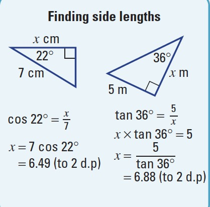
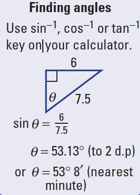
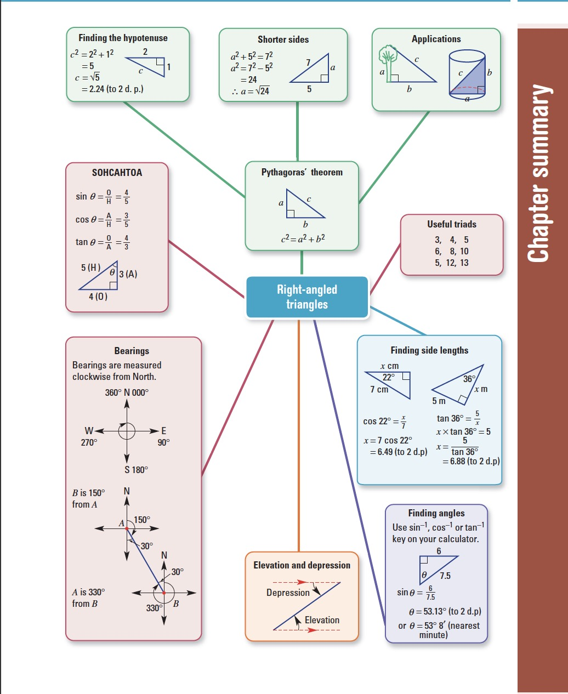

Year 9 Maths Chapter 3 - Right-angled triangles
“the earth is flat” – our Year 9 maths teacher
You will want to refer to Year 8 Maths Chapter 6 for basic geometry. This section is more advanced, and omits basic concepts.
Table of Contents
Pythag
a² + b² = c²
where a and b is the opposite/adjacent, and c is the hypotenuse
Pythagorean triads include 3, 4, 5 (because 3² + 4² = 5²) and 6, 8, 10 (because 6² + 8² = 10²).
Trig ratios
Take a right angled triangle with angle θ.

- The longest side of the triangle (opposite the right angle) is the hypotenuse.
- The side opposite
θis the opposite. - The side adjacent to
θis the adjacent.
There are trig ratios for these sides: sine, cosine, and tangent, which are abbreviated to sin, cos and tan respectively.
In all of the below ratios, the side in the ratio refers to the length of a corresponding side. E.g opposite over adjacent = length of opposite side over length of adjacent side.
- Sine ratio
opposite sinθ = –––––––––– adjacent - Cosine ratio
adjacent cosθ = –––––––––––– hypotenuse - Tangent ratio
opposite tanθ = –––––––––– adjacent
This can be remembered using the term:
SOH CAH TOA

Finding sides
More on Finding Sides at Khan Academy
- Find trig ratio
- With the trig ratio, replace θ with the (acute) angle stated
- Insert a pronumeral for the unknown side, into the trig ratio
- Solve

Finding angles
- Find trig ratio
- Insert the appropriate sides into their corresponding positions on the trig ratio
- Use sin⁻¹(your ratio here) to solve for the unknown angle

Angles of elevation and depression
More at Khan Academy on Angles of Elevation and Depression
- The angle of elevation is how big the angle between a horizontal and a line of sight is. e.g when you look up, you are forming an angle of elevation
- Similarly, the angle of depression is how big the angle between a horizontal and line of sight is, but instead of being up, it is down


oof that meme
Bearing
Measured clockwise from north

Chapter 3 Summary
